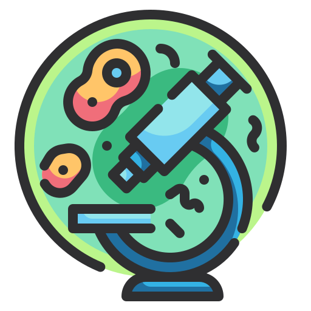
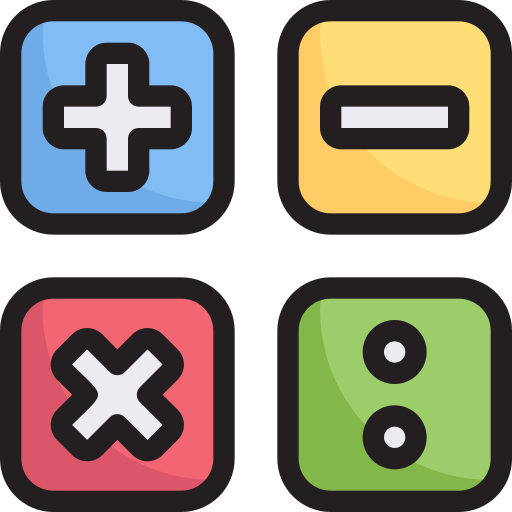

¿En qué va a consistir nuestro proyecto?
¿Te imaginas aprender ciencia mientras resuelves misterios y trabajas en equipo?
En este proyecto vas a crear y vivir tu propio escape room científico para celebrar el 11 de febrero, el Día Internacional de la Mujer y la Niña en la Ciencia.
Un escape room es un juego en el que tendrás que resolver enigmas, encontrar pistas y superar diferentes pruebas antes de que se acabe el tiempo. Pero esta vez… ¡seréis vosotros quienes lo diseñéis!
¿Cuál es el objetivo?
Aprender ciencia de una forma diferente y divertida, conocer la vida de grandes científicas de la historia, trabajar en equipo para superar retos y aplicar las matemáticas junto con otras asignaturas.
¿Sobre qué tratará?



Imágenes: obtenidas de la plataforma de Flaticon (Autores: Wanicon, Kerismaker, Eucalyp y Freepik)
El escape room estará dividido en 4 estaciones, cada una relacionada con una asignatura: Biología y Geología, Física y Química, Tecnología y Matemáticas.
En cada estación descubrirás la historia de una científica importante: Margarita Salas, Marie Curie, Svetlana Savítskaya y Sophie Germain.
Tendrás que resolver pruebas relacionadas tanto con la materia como con su vida y sus descubrimientos.
¿Qué tendrás que hacer?
1. Investigarás cómo se crea un escape room
2. Diseñarás las pruebas y enigmas
3. Crearás una maqueta del juego
4. Usarás herramientas tecnológicas para desarrollarlo
5. ¡Y finalmente lo pondrás en práctica!
¿Estás preparado para el reto? Tu misión será trabajar con tu equipo, pensar de forma creativa y conseguir que vuestro escape room funcione… ¡y que nadie se quede atrapado!